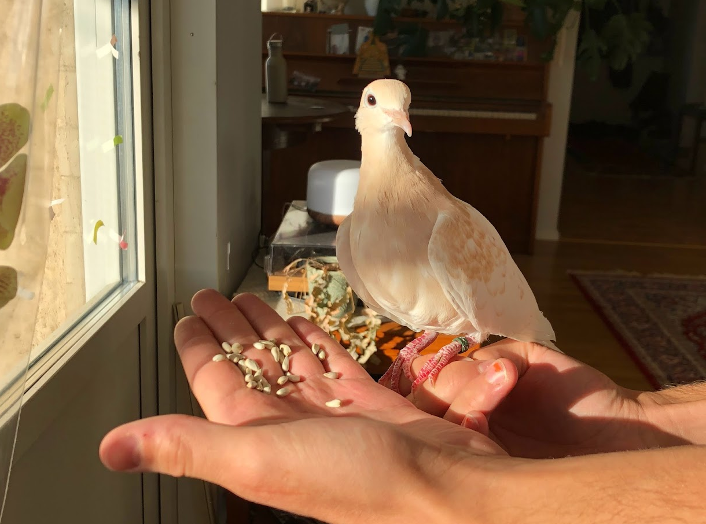
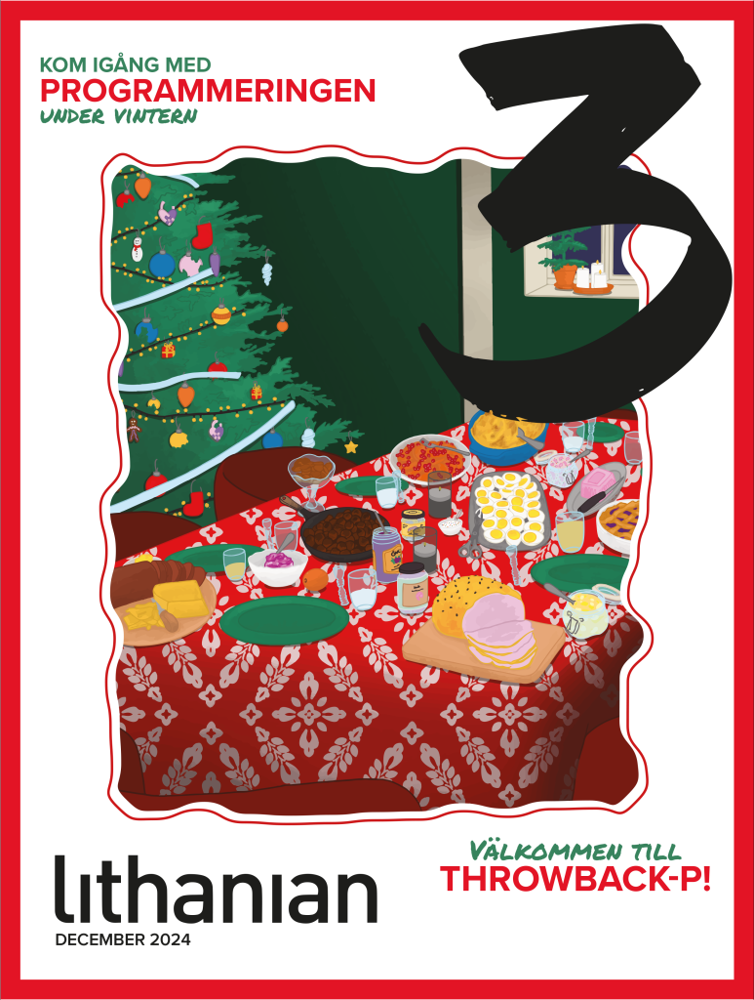
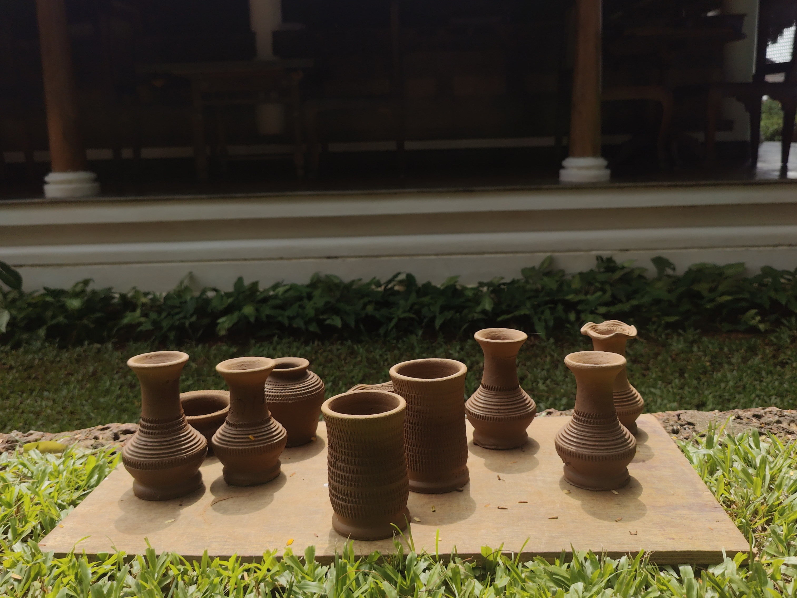
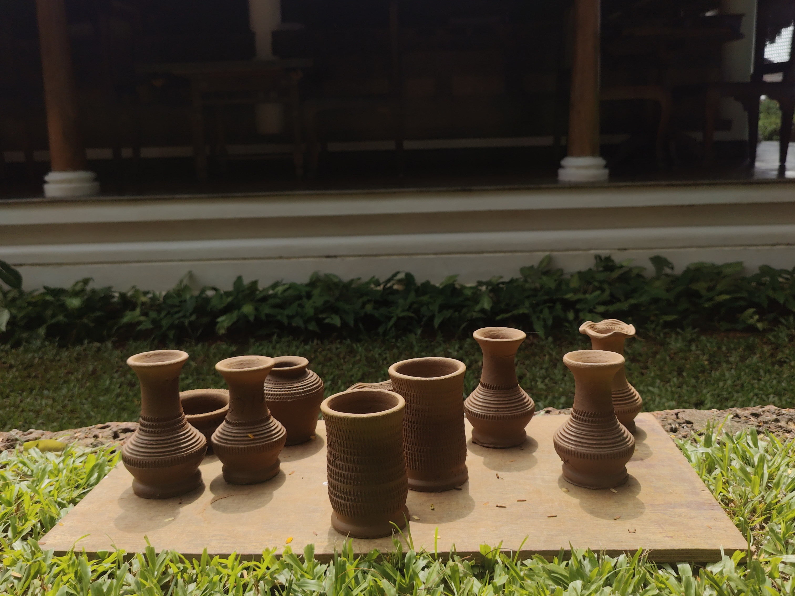

I don't have much of a life update, but as you already know, I'm moving on the 1st of January, and all my stuff is already packed. I hope my birds will enjoy their new home... :-)
What are you doing?
This is a now page. If you have your own site, you should make one, too!
My life is often busy, and I've been somewhat secretive when sharing details with family and friends. I thought this would be a great way to keep everyone updated on what I'm currently doing. I'll do my best to keep this page updated with any new happenings. Thank you, Phillip Ridlen, for inspiring me with your now page!
This was what I was doing as of December 27 2024
This was what I was doing as of November 20 2024
This is what I am doing now
Life 🌟

Education 🎓
I've "finished" my master's thesis and am now awaiting feedback from my examiner. After that, I may need to make some revisions before I can schedule the final presentation. Besides that, I have one last exam to take in January. Hopefully, the next time you hear from me I'll have graduated!
Work 💼
As for work, not much has changed. I'm patiently waiting to start my role as a Developer on the Mini Pay team at Opera.
Organizations 🏢

My ethical hacking organization is currently on hold for the holidays. Unfortunately our collaboration with Enlightsec was canceled due to circumstances I won't go into here — in short, they didn't secure the funding needed to move forward. On a brighter note, we're still aiming to hold the CTF event in March, though we might need to scale it down a bit. Thankfully the university and Cyberly continue to support and assist us in our efforts. We also created a mini hacking challenge for Christmas, which I'll attach here if you'd like to give it a try! We've also had a meeting with other tech related organizations at the university, where we talked about potential future collaborations. I'm optimistic that 2025 will be a great year for this organization.

As Editor-in-Chief of LiTHanian, we've recently published our first magazine! While it won't be publicly available, you can view the cover image and explore our redesigned website at lithanian.se. We also held a release event, which was a great success — though admittedly a bit stressful.
Hobby Projects ⚙️
For me, having hobbies outside of studying and working is very important. My main hobbies are programming, photography, music, and writing.
It's been a hectic month this month too as I've been finishing up my studies and preparing to move. On top of that, I got quite sick for a while and am still recovering.


 

As some of you know, I was in India, and of course I took some pictures! I'll attach them here for you to check out.
Ever since I was little I've dreamed of writing a movie script, so I've finally started working on one! It's currently around 50 pages and my goal is to double that. The project is called "The Poetry Corner: A Love Poem", and it's inspired by a "book" I wrote, which is essentially a very very long love poem. I've attempted to write movie scripts several times before but never finished them — this time I'm determined to see it through!
Expert Progress 📈
The concept of reaching 10,000 hours to become a professional or an expert in a field is derived from Malcolm Gladwell's book "Outliers: The Story of Success" Gladwell popularized the idea that achieving a high level of proficiency in any field typically requires about 10,000 hours of dedicated practice. This notion is based on the research of psychologist Anders Ericsson, who studied the practice habits of elite performers in various domains.
I've been tracking my programming time since 2019, so these numbers are based on that data. The actual total is likely higher, considering I wrote my first program in 2012! Please note that I include this jokingly; I don't necessarily believe in the idea of becoming an expert after 10,000 hours. I haven't given it much thought, and I certainly don't feel like an expert yet.